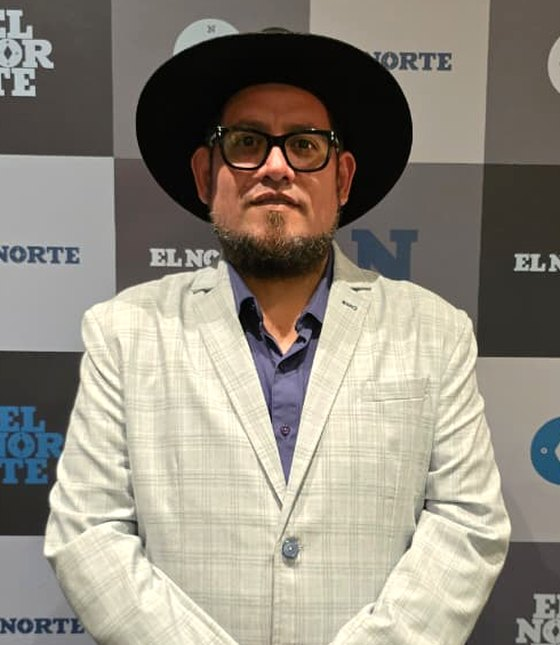

Escuela de Ciencias de la Educación de Nuevo León
Secretario Técnico B. Articulación institucional, coordinación interdepartamental y seguimiento de proyectos estratégicos.

Comunicación institucional | Escuela de Ciencias de la Educación
Doctor en Innovación y Desarrollo Educativo, Maestro en Innovación en la Enseñanza de las Matemáticas y Licenciado en Ciencias de la Comunicación y en Educación Secundaria con especialidad en Matemáticas.
Cuenta con experiencia en docencia, gestión académica, tecnología educativa y comunicación, con una trayectoria profesional que comprende la educación básica, superior y de posgrado.
Ha desempeñado funciones de coordinación académica, tecnología educativa y formación continua en instituciones públicas de educación superior, particularmente en la Universidad Pedagógica Nacional. Actualmente se desempeña como Secretario Técnico B de la Escuela de Ciencias de la Educación de Nuevo León, participando en procesos de articulación institucional, coordinación interdepartamental y seguimiento de proyectos estratégicos.
En el ámbito académico, ha impartido asignaturas de licenciatura y posgrado, con especial interés en innovación educativa, mediación tecnológica, evaluación educativa y formación docente.
Paralelamente, desarrolla una trayectoria en periodismo y comunicación pública como director de LCR Noticias y colaborador editorial de El Norte, abordando temas educativos, políticos y sociales.
Su actividad profesional integra la gestión institucional, la innovación tecnológica, la comunicación estratégica y el análisis de políticas educativas, con especial interés en el fortalecimiento de las instituciones formadoras de docentes.
Secretario Técnico B. Articulación institucional, coordinación interdepartamental y seguimiento de proyectos estratégicos.
Coordinación académica, tecnología educativa y formación continua.
Asignaturas de licenciatura y posgrado en innovación educativa, mediación tecnológica, evaluación educativa y formación docente.
Director de LCR Noticias y colaborador editorial de El Norte.